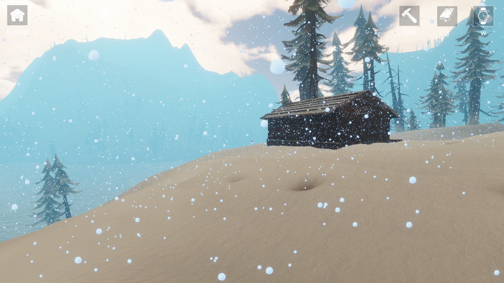
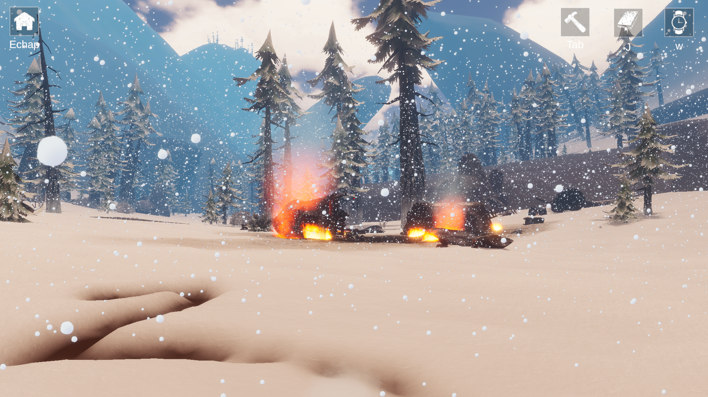
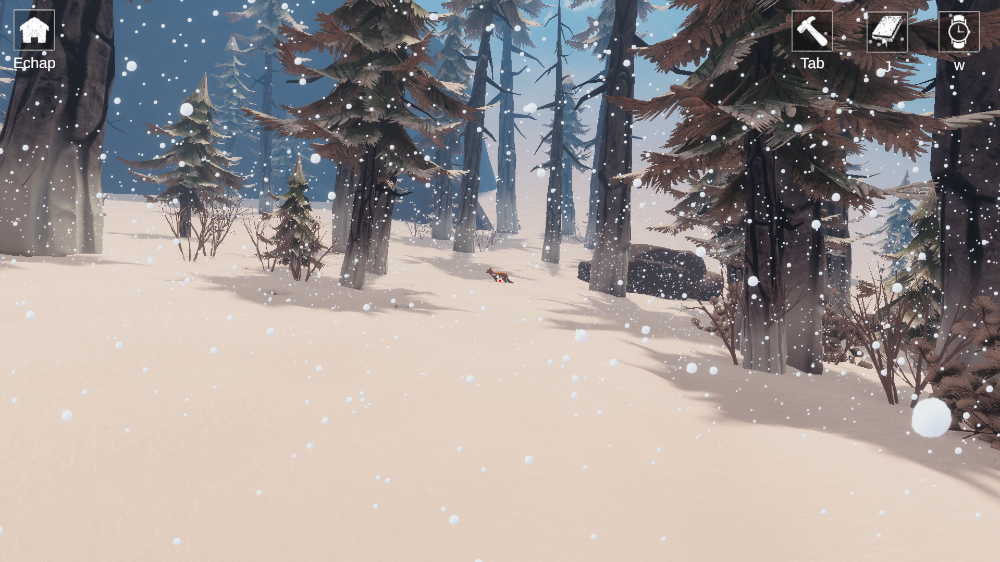
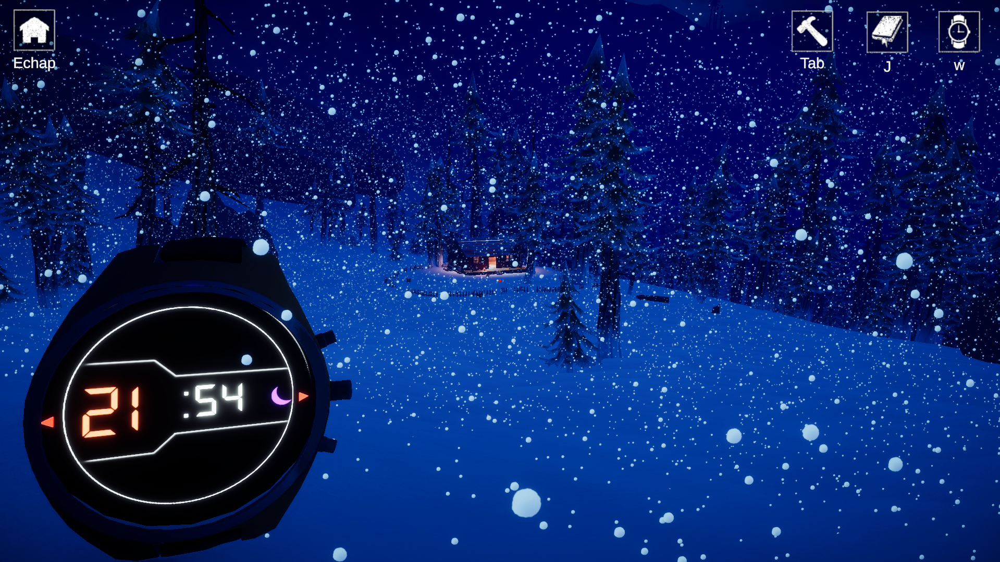
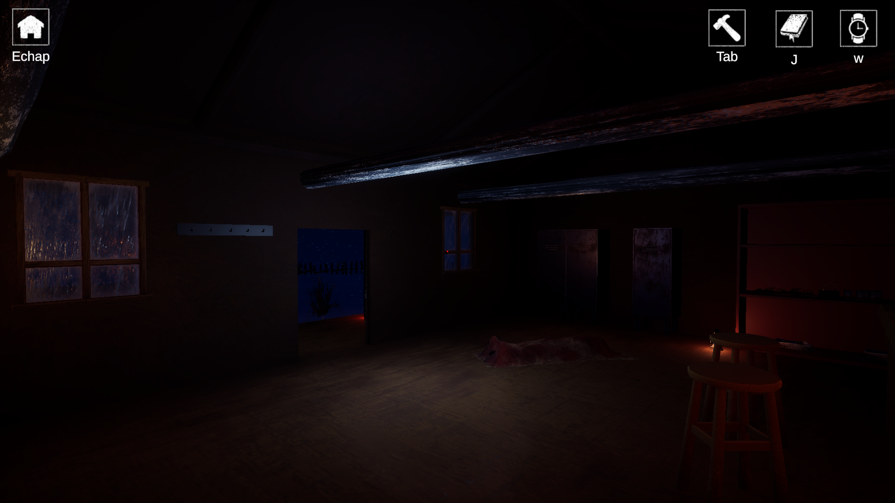
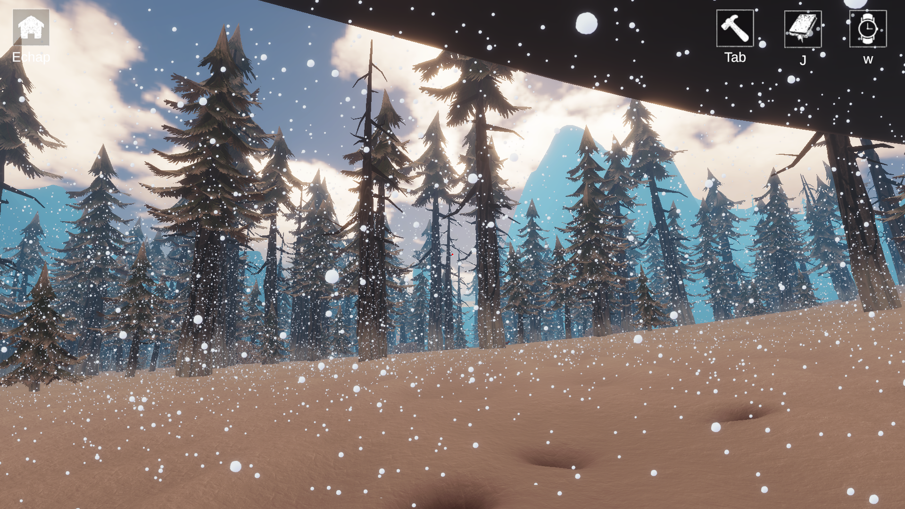
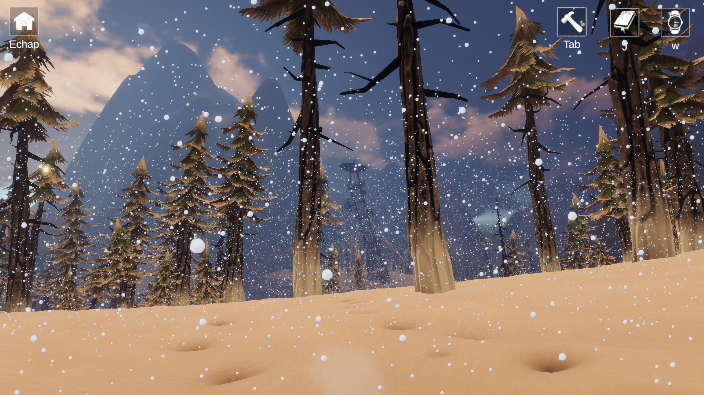
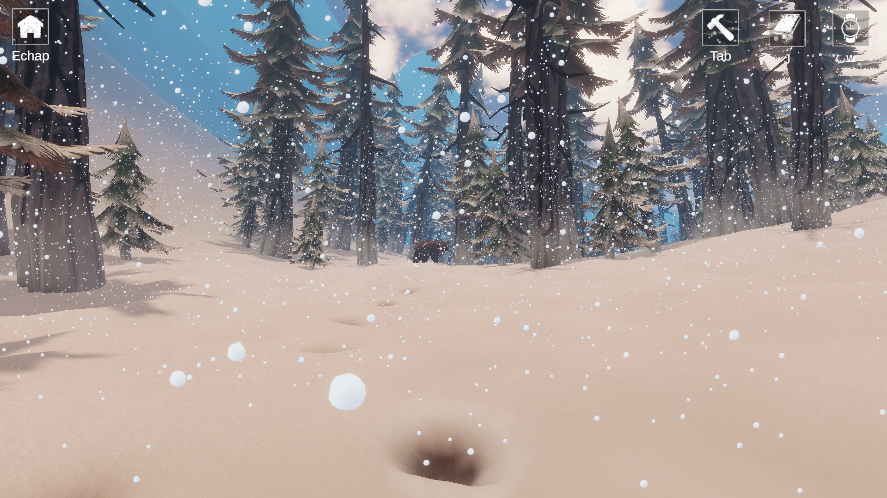
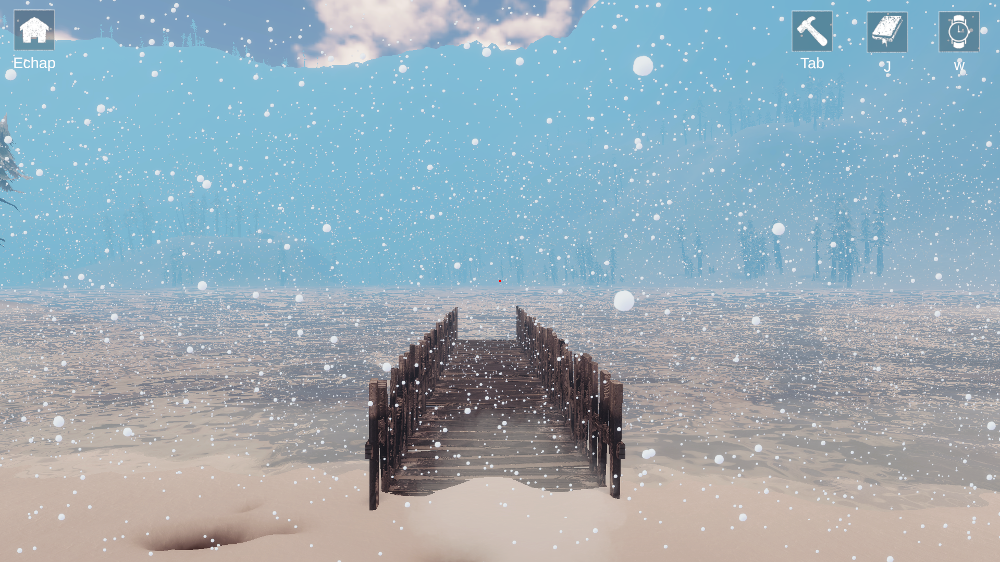
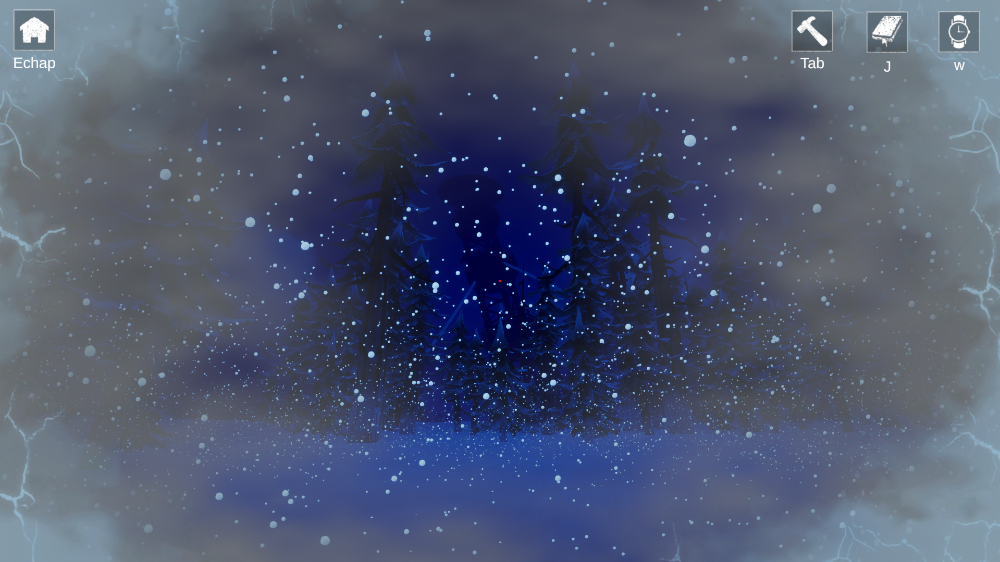

Jeu de survie développé sur Unity.
Dans un univers post-apocalyptique, le joueur doit gérer ses ressources et ses constantes vitales pour survivre face aux éléments et au temps qui passe.









